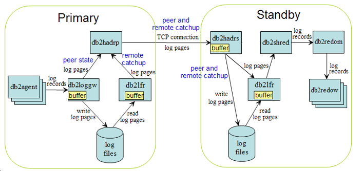

HADR Log Shipping
Table of Contents
HADR log shipping has different path in different HADR states. The state is reported as "HADR_STATE" in HADR monitoring. There are rules for transition from one state to another. If you are not already familiar with HADR states, see DB2 Info Center:
DB2 V10.1 has enhanced support for shared archive between primary and standby. The standby will retrieve from log archive on each reconnection to the primary. Standby retrieving from archive reduces load on the primary machine and HADR network. In V9.7 and earlier, archive retrieval is only done once on each standby activation, at end of local catchup state.
The diagram below shows HADR data flow.

Each rectangle in the diagram represents a thread (also known as EDU (Engine Dispatchable Unit)) in DB2 engine. Threads relevant to HADR are:
You can list the edu's in a DB2 instance via the "db2pd -edus" command. See DB2 process model for description of all edu types.
On the primary side, the agents inserts log records into log buffer, whose size is controlled by database configuration parameter LOGBUFSZ. The db2loggw edu (logger) writes the records into log files. Log records are of variable size. They are packaged into fixed 4kB log pages for log writing, reading and shipping.
In peer state, HADR (the db2hadrp edu) directly sends log pages from logger buffer. It does not make a copy. In remote catchup state, HADR reads log pages from log files via the db2lfr (log file reader) edu. Again, HADR directly sends log pages from LFR output buffer.
HADR sends log pages via a TCP connection. On the standby side, HADR (the db2hadrs edu) receives the pages into its own buffer, whose size is controlled by registry variable DB2_HADR_BUF_SIZE. The default buffer size is two times primary's LOGBUFSZ. This is also the minimal. Any DB2_HADR_BUF_SIZE setting smaller than this is ignored. The HADR edu writes the received pages into log files. To protect against crash, log records must be written to disk before they can be replayed.
To replay logs, the db2shred edu (shredder) "shreds" log pages into log records, then passes the records to replay master (db2redom), who dispatches the records to multiple replay workers (db2redow).
When log spooling (first available in DB2 V10.1) is disabled, when the standby is receiving logs from the primary (peer and remote catchup state), the shredder only reads directly from HADR receive buffer. This is more efficient than reading from disk. But a buffer page cannot be released for receive again until it has been fed to shredder for replay. If replay is slow, incoming pages will fill up the buffer and HADR will have to stop receiving, eventually blocking log write on the primary if HADR is in peer state. In other states, such as local catchup, shredder can read from disk via LFR (db2lfr edu).
When spooling is enabled, shredder reads from HADR receive buffer if data is available in the buffer, otherwise, it reads from disk. HADR edu will release a buffer page for re-receive after it has been written to disk, even if it has not been fed to shredder. Shredder will read it back from disk later. HADR will stop receiving only when spooling device (the logging device) is full or configured hadr_spool_limit is reached.
See also "hadr_spool_limit" section in HADR config.
db2loggw (logger) writes log pages to disk when its periodical check on log buffer shows that there are pages ready to be written (pages filled with log records), or when an agent explicitly requests an immediate write for transaction commit. Each write is called a "flush". The number of pages in a flush is non-deterministic. The logger writes out all ready pages in the buffer. The logger is designed to be self tuning. While the logger is writing, agents are concurrently inserting more records into the buffer. So if a flush takes longer time, the next flush will be bigger. Larger flush increases I/O throughput, especially on hard drive based devices (less so on SSD (Solid State Disk) devices).
Standard (non HADR) databases use the same log write algorithm.
See also DB2 logging performance.
In HADR peer state, db2loggw requests db2hadrp to send the flush to standby when it writes the flush. For efficiency, HADR edu does not make a copy of the data. It directly passes the address of the buffer to TCP send() call. In nearSync and async modes, log writing and sending are performed in parallel, while in sync mode, log pages are written to disk first, then sent. Even if a flush is physically written to disk, it is not considered "written" by SQL agents (agents cannot commit the transaction) until db2loggw receives notification from db2hadrp that log replication for the flush is complete. For sync and nearSync modes, db2hadrp notifies db2loggw when the ack message comes back from the standby. For async mode, db2hadrp notifies db2loggw when all data has been delivered to TCP layer.
HADR has no direct impact to log writing in other state. SuperAsync mode never enters peer state, so it has no direct impact to log writing. But it may have indirect impact such as adding log read load to log device (it stays in remote catchup state), competing with log write.
See also HADR sync mode
HADR automatically manages log files on the standby. Received log pages are written to log files. Standby log page to file mapping is kept identical to that of the primary. Thus log files by the same name are interchangeable on the primary and standby. The files may not be identical byte by byte, due to different log file meta data versioning on the primary and standby, but they are logically identical.
For crash recovery purposes, a log record is replayed only after it has been written to disk. Once replay has closed (committed or rolled back) transactions associated to log records in a file (the file falls out of active transaction window. ie. File is older than "First active log file" from "get db cfg"), and the file has been archived on the primary, the standby will reclaim the file. If both logarchmeth1 and logarchmeth2 are configured on the primary, the standby does not reclaim a file until the primary has archived the file using both methods. Reclaim may rename an old file into a new file, to avoid initializing the new file, or delete an old file if number of files in log path exceeds sum of logprimary and logsecond. The "archived on primary" requirement ensures that if a takeover (forced or not forced) happens, a file not yet archived on the old primary can be archived on the new primary (no file is missed in the archive).
Note: The standby never archives log files, even if an archive method is configured. It will start archiving only when it changes role into a primary.
If archiving is not enabled on the primary (It is using logretain), then the standby will not reclaim any log files. All files will be kept on both primary and standby. Users are responsible to manage the files. Generally, files older than "First active log file" from "get db cfg" can be removed. "First active file" should be read and used for file management on primary and standby separately. Standby's first active file can be older than the primary's because replay on standby can fall behind primary's transaction processing.